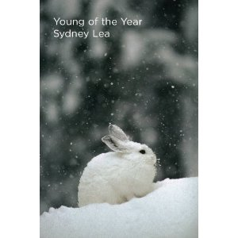
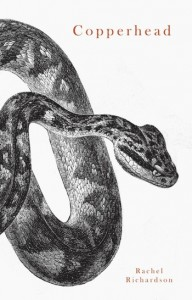
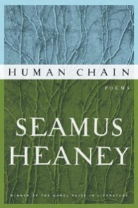
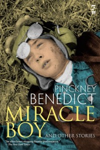
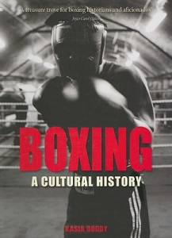
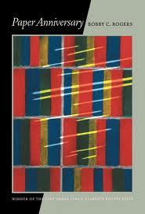
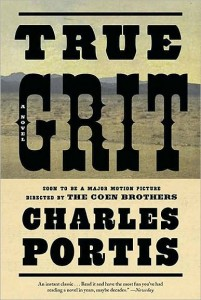
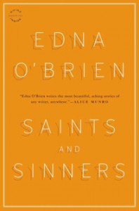
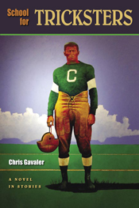

RECOMMENDED READING
[A new feature for Shenandoah. Future recommendations will be made by interns, guests and contributing editors. In this issue they are all from the editor.]
Books Reviewed:
Young of the Year by Sydney Lea
Copperhead by Rachel Richardson
Human Chain by Seamus Heaney
Miracle Boy and Other Stories by Pinckney Benedict
The Southern Poetry Anthology: Contemporary Appalachia edited
by Graves, Ruffin and Wright
Boxing, A Cultural History by Kasia Boddy
Paper Anniversary by Bobby C. Rogers
True Grit by Charles Portis
Saints and Sinners by Edna O’Brien
School for Tricksters by Chris Gavaler
The Good Daughter by Jasmine Darznik
Young of the Year by Sydney Lea (Four Way Books, 2011)
How often do I see that a poet (or even a mystic) has written with conviction that he or she accepts, even embraces the grand circle dance of the natural world, which will of course guarantee the poet’s eventual demise, dust to dust and all that? And how often do I respond “bullshot,” or something similar? But when Sydney Lea concludes the final, title poem of this collection with accepting “of course”s – “Of course the glorious earth// will take me back, of course the young-year hare give profligate birth” – I nod and am wholly persuaded. This is in part due to the ways the poem’s previous forty lines address what is past and passing and to come and partly because the whole volume weighs the woe and the weal of life with such meticulous honesty and imagination, right down to the “steaming purple pip” of a sparrow’s heart, but my response is also a function of my on-going admiration of Lea’s poetic stamina, his decades of poems that run without rushing, his extended narratives that haul along a whole landscape and an invisible world of delicious and perilous particulars, not call and response so much as cry and “countercry.”
{kind=link}
This volume offers a whole trophy case of excellent poems, some of which appeared in Shenandoah, but I want to call particular attention to “Dubber’s Cur,” in part because it’s dedicated to the late John Engels, a poet deeply mourned but not widely enough remembered, or memorized. Lea’s narrative recounts the sophisticated (“French bread,” “organic,” “foreign car”) speaker’s on-going scraps with a less polished (“common law,” “Scrawny pony,” “junkheap ramble”) neighbor’s dog, the cur of the title, who makes sorties into French bread’s yard, snarling and pissing and annoying the house dogs no end. In what could easily become a class war concluding with shotgunned rocksalt and the narrator’s victory strut, Lea finds a stronger virtue than protecting one’s demesne. He does not blame the renegade, but turns the question of passion and mission on his reader who “may have sensed/ a near-exalting rightness/ in doggedly keeping at it, just as Dubber’s cur/ keeps at his climb, shows up.” The extended empathy and forgiveness, the willingness to project and understand are all important to the poem and in some way a tribute to Engels, one of our most sorrowful losses of recent years, but the real point is the poetry, the pace and shift of language, the restraint and abundance, the interrogated certainty. I can think of people who would read “Dubber’s Cur” and not want to devour the whole collection, but I might not much care for their company.
Copperhead by Rachel Richardson (Carnegie Mellon, 2011)
I am still learning how to read this book, its skitter styles and sly admissions, its portrait of the sowbelly, roadside, catfish South I know and love, and it has old friend Audubon, Leadbelly, escaped horses and snakes, even early/virgin Britney Spears photo-posing at a slave cabin, guilt and hope, and nobody has written figs this deliciously since D. H. Lawrence. It’s a book about sorrowful home and wistful demesne, swamps and crimes of passion, a song to keep you alive, “Vipers, that spring, spread thick on the ground,” “mak[ing] music of anything you have.” If the train bound for Rachel Richardson’s Louisiana stops near where I’m biding time, I’ll soon be long gone.
Human Chain by Seamus Heaney (FSG, 2010)
Several decades ago devilish reviewers started sniping at Seamus Heaney, who has long been Famous Seamus to his detractors, and they never seem to tire of repeating themselves. His rustic scenes were rusty, his gritty diction discordant, his trove of obsolete utensils edgeless, his bonhomie ridiculous, his politics cagily cautious to the point of cowardice. Even, later, his Electric Light too light. And eventually the work earned some of their skepticism. The collections released since he pitched in earnest into his wonderful Hiburnisized translation of Beowulf have featured fewer amazements and surprises than I was accustomed to in North or Station Island. In the less exciting poems, his relationship with the muse had grown cozier, as if he routinely tossed her (it/them/us) a piece of doctored meat. But nestled in each collection were a few poems that carried the genuine ore of his genius.
Human Chain contains more than a few. On a cool afternoon, tired of the strut and fret of so much contemporary poetry, the antic erudition and hipper-than-thou newness of the prompt-driven, workshopped muldoonery and joriation and snarky fool’s gold, I settled back against a rock off the Blue Ridge Parkway and began to honeydip in Heaney’s most recent demonstration of the old ways of being new. Probably more than a few Heaniphiles and Heaniphobes have wondered what impact his recent stroke had on an already-serious writer whose imagination had long ago headed south (to Dante’s rough realm, the heart of The Odyssey, the center of The Aeneid, the fen of Grendel’s dam). The answer is not, in Heaney circles and districts, so new. The darkness has grown lighter, the light more crepuscular. But the consideration (con-sidere: with + stars?) of last things is at once more intense and placid. Heaney has always seemed to me unfashionably wise in matters of the heart, mortality and guilt. He was also more than a little sly, but now the slyness seems to have brushed up against the voice of William Stafford, and the timbre is thereby altered in ways I admire.
The opening poem, “Had I Not Been Awake,” warned me on the threshold that the “courier blast” of wind that woke him one night would “not ever/ After” seem ordinary. Fair enough: wind, stroke, discovery. But then he pushes his report further, quietly, with a shiver that reminds me of the Heaney I discovered back when North came out. “And not now.” What a quiet little increment of caution, a halting of the reader who thinks he’s being given a long-term but not immediate alert. But then that quiet little touch on the shoulder and the Cycladic smile: “And not now.”
My favorites in the volume include a couple of poems more directly about the sudden world-swirling stun of a stroke. “Miracle” re-counts the New Testament verses about the invalid lowered through the roof to Jesus’ healing touch, focusing on those friends whose labor hauled him there waiting “For the burn of the paid-out ropes to cool” across their hands. The “paid-out” is echoed in “Human Chain”’s “backbreak’s truest payback” for aid workers who have passed sacks of meal (or a fallen man) down a rescuing line. Heaney (it seems ridiculous to say “the narrator” here) recalls the visceral experience of “A letting go which will not come again./ Or it will, once. And for all.” Again, the almost-afterthought touch, which gave me both a chill and a little sense of levitation.
This is supposed to be an abbreviated take on the book, so I’ll skip through, listing a few gems, as when an otter will “drop whatever he’s retrieved and gambol/ In pelt-sluice and unruly riverbreath.” More penwork, “Hermit Songs,” an herbal, elegies, the magnificent “Eelworks” with its tangled glitter of syllables (“Sylph-flash made flesh”) and visceral thrill, a moonlit encounter with rifle-bearing militiamen, boilers, balers, tractors, “the violet blet” of granulated coal and an old man who could no longer stand to watch the sun going down (to report the last line of that one would be a spoiler).
Human Chain is not a spoiler but a debut of the risen Heaney (I know, I know . . .) to be savored and interrogated. It lacks the “party piece” extended poem, the tour de force that many Irish poets see as obligatory for each sheaf, but the book’s overall spell is lasting, a whispery promise that the wind is breath, and that for the right eye, even the shadows shine.
Miracle Boy and Other Stories by Pinckney Benedict (Press 53, 2010))
Press 53 has done a laudable job of presenting Benedict’s new book of stories in a cleanly-packaged, affordable paperback format – fourteen stories easy on the eye and pocketbook. But these stories, set in rural and small-town West Virginia, are not easy on the heart or the mind. The characters – sometimes the narrators themselves – are rife with strangeness and torqued normalcy. They are undergoing ordeals of discovery and agony, whether they’re climbing power poles for penance, seeking out diseased livestock, creating hillbilly homunculi, transforming to other species or fending off ghosts, and Benedict’s resourceful style and wild word hoard, his sense of narrative and dramatic pace, his eye for the stunning image and the mythic insinuation make these stories spiel out like movies and like fireside tales at the same time.
The title story is one of the five or six that rise to the top of any stack of stories written by an American right at the tail of the last century and into this one. Benedict’s style is loaded with expectation and suspense, but while readers wait for the what-next? he delivers the now with confidence and accuracy: “They will drop a salt lick in a clearing that he knows . . . by a quiet little stream, and they will wait together in the ice-rimmed bracken, squatting patiently on their haunches, Miracle Boy and his old man, to kill the deer that come to the salt.”
Every story manages to evoke redemption, death and transfiguration, the living quality of language when it addresses the natural and agricultural world. You almost expect the words to become bobcats or miniature ponies, crickets or ivory-billed woodpeckers and rise from the page. A couple of the more fanciful stories with strong sci-fi leanings (like “Zog-19: A Scientific Romance”) are not my meat, but if someone asks me what kind of stories Shenandoah is looking for right now, by the time I said “heart-breaking and side-splitting, ingeniously conceived and bravely, desperately written but presided over with a cunning and empathetic eye,” I’d be ready to abort the attempt and say, despite the fact that we did not publish any of these stories, “Read Pinckney Benedict. He’s got the hot hand.”
To read what Shenandoah interns thought about Miracle Boy click here.
The Southern Poetry Anthology – Volume III: Contemporary Appalachia Edited by Jesse Graves, Paul Ruffin & William Wright (Texas Review Press, 2010)
This substantial volume (300 pages) in the ambitious Southern Poetry Anthology project will provide a welcome reservoir of poems for students of Appalachian poetry and curiosity seekers alike. Although its parameters exclude such widely-loved bards as Byron Herbert Reece and Jesse Stuart, the collection features eighty poets, and though it may occasionally lean too far toward the inclusive (in matters of both geography and achievement), it will likely eclipse Marita Garin’s 2008 Southern Appalachian Poetry, which is also, in fact, limited to contemporaries but by virtue of its lack of recent work by most of the poets was obsolete almost as soon as it was published.
While I don’t want to debate the editors extensively on matters of who’s invited and how big a helping is on which poet’s plate, I will mention the absence of John Foster West (NC), Bettie Sellers (GA), R. H. W. Dillard (VA), Diane Gilliam Fisher (Ohion/WV) and the wonderful Jonathan Williams (NC) as disappointments, and the small bait of poems by Charles Wright is also disconcerting, though one never knows what considerations of copyright, cost and authorial quirk play a role in the shadowy negotiations of selection.
It’s far more useful than dwelling on the bean count to point out some of the riches of the collection. Among the major voices here are (and one would be hard pressed to question their geographical credentials, so long as birthplace and conception site are not allowed to dictate) Fred Chappell, Kathryn Stripling Byer, Robert Morgan, George Scarbrough, Maggie Anderson and Lynn Powell, all essential to the endeavor, the last two absent from Garin’s effort.
And most useful of all – to mention a few poems which will make the reader consider full immersion. Anderson’s mine disaster account “Long Story,” Byer’s low country “Drought Days” (one thirsts for more of her work here), Chappell’s “Halloween Moon Over Huddle Knob Graveyard” and Cathryn Hankla’s “Bee Tree,” these last two originally from the pages of Shenandoah (so curse me for consistency). Also: Ron Rash’s small gem “Speckled Trout,” George Scarbrough’s “Firefly,” Wright’s “Celestial Waters,” David Huddle’s “Religious Life,” Michael Chitwood’s “Black Locust,” Maurice Manning’s “The Foot Washing,” Linda Parson’s Marion’s “Repossessed” with its closing “nigh as the wayward lamb to deliverance” and Judy Jordan’s “Waking in Winter.” Just a sampler, but a fitting introduction.
It won’t take readers long to discover the truth of the widespread assumption that Appalachians write about religion, wild place, wildlife, family, hardship, quilting, bloodsport, the Rapture and beauty salons, but Frank X. Walker’s “Nyctophobia II,” Jennie Janeshek’s “July 1st, Thanks to Basho,” Scarbrough’s “Drouth” and Michael McPhee’s “Saint Lucy” will come as surprises. High country poets know the high country, but not only. They survey prospect, syntax, idiom and urban whirl and snarl with the same keen eye that watches hawks and uncles.
I unearthed a few typos in this book, a few errors of fact, mostly in the extensive biographical notes, a dropped stitch or two, a joist off level, but the abundance of craft and spirit on display, the sheer amplitude and spaciousness of this collection overrides any flaws I found. For a long time readers have probably assumed that the wealth in Appalachian literature lies in its fiction – from Look Homeward, Angel through Time Was and The Journey of August King to Cold Mountain and beyond – but now perhaps a more accurate reckoning has begun, thanks to these editors.
Boxing: A Cultural History by Kasia Boddy (Reakton Books, 2008)
The “sweet science” is, of course, not just a sports contest in which two men dance and dodge, pummel and skip, bleed and swell. It has been thought of as everything from a moral test to an art, and its history runs from the metal-lined caestus (“sharp glove”) of Virgil to headgear and digitally monitored training methods. Thomas Eakins photographed boxers, Langston Hughes wrote about them, someone painted them on the walls of Akrotiri, Jack London posed as one, Wallace Beery played one, Leila Ali became one, and who in the fifties did not shout and gesture during “The Friday Night Fights” on the TV box while Gillette razors were advertised by a cartoon parrot and hard-bitten announcers and writers (Bat Masterson had been one, before TV) commented and coined crisp phrases. But what is it all about?
This is the larger question Kasia Brody approaches in this briskly written, informed and surprising chronicle full of photographs, poetry, testimonials, paintings and analyses of, among others, Dickens and Scorsese on the subject. Boddy focuses on the appeal of boxing to the various aesthetic and reportorial media and the sport’s implications – as displayed in the arts – for work, race, violence, class, gender and any number of other human endeavors. And it’s worth saying right away that this careful observer and analyst can write. It’s an old trainer’s axiom: “whoever controls the breathing in the ring controls the fight,” and while she writes with compelling pace and shrewd momentum, Boddy has a full arsenal of tactics. She knows when to feint or backslide, when to press forward and deliver the payload.
Pugilism has been examined and depicted since the arts began, and ever since Punch descried the outlawing of prizefighting in 1841, cultures and their artists have been interrogating themselves about the nature of squaring off and wading in. Just a few of the hundreds of creative spirits who have entered the fray are Warhol, Fielding, Chaplin, Oates, Hogarth, Mailer, Doyle, Papa, Ellison, Hurston and Huston, Dylan (remember Hurricane?) and Ali the bee himself. Mass culture, boxing and the representation of boxing have developed in tandem, of course, but who knew that Eliot took lessons or that Kubrick began as a boxing photographer?
My list is whimsical, but Boxing: A Cultural History is not. Boddy uses what goes on in the ring to illuminate what goes on around it and explores the ways that artists have seen the boxer as, simultaneously, champion and scapegoat, how the vicarious and cathartic experiences of the sport (that word is seeming less and less apt) have helped shape the history of literature, painting, film. Almost everyone has at one time been a pro, an amateur, a poseur or a spectator, and we know how the thrill and the shame of our compulsion are locked together.
Boddy concludes with a survey of recent fight films – Raging Bull, The Great White Hype and Million Dollar Baby – and I hope she’s had her say somewhere about 2010’s The Fighter; she seems the natural person to ask. This hefty volume will delight both the mildly curious and scholars who read it from red frontispiece to red end papers. One of my few regrets is that she doesn’t mention the following piece of weird artistic/pugilistic confluence and confusion. In Million Dollar Baby, Clint Eastwood’s crusty Irish-American trainer Frankie Dunn tries to seize some of his cultural history beyond boxing; he’s learning to read Gaelic so that he can “improve himself” and read Yeats in the Irish. Since Yeats wrote in English (of necessity; he didn’t have Irish), what bit of sedition was screenwriter Paul Haggis up to, Mo Cuishle? I believe Boddy would have an answer for even that.
Paper Anniversary by Bobby C. Rogers (Pittsburgh, 2010)
I discovered the work of Bobby Rogers about two years ago (late to the trough again), and the unembellished truth is that his poetry lifts me. There’s something of Whitman in these long-lined, free associating narratives, Old Walt’s omnivorous style and his candid admiration of workers, but this poet stops short of the operatic overkill that crops up in his forebears. Rogers is not at all reluctant to mix into his shrewdly-directed rambles the stuff of books – Faulkner or Marx, Language Poetry, Eliot – and the local runs through these poems, the tracks of the L & N, fifths of Old Carter, fences and paint stripping, good setters, knives and knaves, Johnny and June, a house party in Dyersburg, Tennessee. All with robust grace and an admirable candor. Rogers is the first poet to come down the pike in a long time and remind me of the wide net and keen eye, sharp tongue and good groove of Rodney Jones, which is no small thing. Yet Rogers is his own man, a little less acerbic and prone to revel in the academic swamp than Jones.
Paper Anniversary is wholly itself, all the poems issuing forth from a central voice, consciousness, ethos, and as I said, it lifts me. Rogers knows how to close a deal, pulling many incidents and details into a poem, then closing with “the closed wound shines” or “a few short scenes that won’t go dim.” His humor is quiet, and though the echo of tragedy is never too far from his melody, his words promise that some will endure and thrive.
Though I’m a great fan of “Meat and Three,” set in a joint where you can get a good plate lunch, sweet tea, good talk and hints of the miraculous lurking in the commonplace, my favorite poem in the collection is the second one, “Arkansas Stone,” which looks hard at knives and the perfect device for honing them, at family knives, nicked knives, Sunday knives and swapped knives, bringing together the usual information and some obscure mineral data. The narrator reports his grandfather’s understanding, perhaps learned from the craft of sharpening, that “these lives we’re given are made mostly of waiting/ and incremental wear and a life’s work of standing up/ against it.” Like many of Rogers’ poems, this one operates with lines of over a dozen syllables and scant rhyme but feels more formal and reminds me how rightness and precision and concentration make a formality of their own which can make you feel like you’re reading neatly-sculpted (but flexible) heroic couplets. “Who would ever say a knife/,” he asks, “is not a work of art, so precisely made and perfectly/ folded, so blissfully singular of purpose?” And who would say that a poem is not a knife?
It seems politic, when commending a book so enthusiastically to note its shortcomings, so it won’t sound like you have an iron in the fire or have been asked for a blurb. Fair enough. Shortcomings? A substantial length for poetry, but Paper Anniversary ’s not long enough to suit me.
True Grit by Charles Portis (Overlook, 1968)
Why recommend a slender novel, a quirky “cowboy story,” so many have read already and so many more have seen in one or both of the film treatments? Different as the two mediums are, all the best lines and scenes in either movie, the tensions and rhythm and alternating dread and catharsis, are right out of the book, a reminder that, even in the matter of movies, somebody has to write the thing. Somebody has to pen, type or key in all those words. And the covenant between creator (or creative team) and consumer is different; in a book, the receiver has much more control over the pace of his/her own progress through the story. Publishers have long known that type size and style, margins, page size and so on play a role in how the book is read, but the reader’s own preferences play a more prominent role, and the writer of prose has only the resources of language to guide those reader habits and needs.
{kind=link}
It’s tempting to read True Grit at a gallop. The simplest elements of the plot – felony and pursuit, the journey, the mis-match of the avenging party complicated by alcohol, cussedness and a tight weave of affection and disdain, then the climax and downhill denouement – make it a page-turner. The characters, as everyone now knows, are eccentric/comic/loveable/irascible or full-bore scurrilous or all of the above, the comedy merciless, the dialogue clean and taut as Leo Kottke’s strings.
The great feat of the story is to deliver this tale in a credibly archaic version on an old woman’s voice reminiscing on a long-ago pilgrimage, t accomplish this and still prevent it from sounding like a stunt or an imitation Huck. Portis manages this with surprising vernacular phrases, understatement, a refusal to reach for high rhetoric without wrapping it in irony or any false determination to move the story forward. Readers and viewers alike remember LaBoeuf’s “A saucy manner does not go down with me,” Tom Chaney’s “Everything is against me. Now I am shot by a child,” one-eyed Rooster’s “If it ain’t loaded and cocked, it won’t shoot,” Mattie’s stoicism, her insistence on being treated as equal to an adult male and her skewering use of Biblical phrases like “The wicked flee where none pursueth.” The difference between the media is that the reader gets to say all these words aloud, to taste them on the tongue and feel them in the whole vocal apparatus. In novel form, True Grit invites oral performance, and indelible as the voices of the Duke and the Dude are, the pleasures of audition may be secondary to the pleasures of participation. I believe it’s no spoiler to promise great satisfaction when the reader or re-reader, with the whole weight of 224 pages behind her or him says, “This ends my account of how I avenged Frank Ross’s blood over in the Choctaw nation when snow was on the ground.”
And in the best interest of Portis, Mattie, yourself and Donna Tartt, don’t bother to Ms. Tartt’s “Afterward.”
Saints and Sinners by Edna O’Brien (Little Brown & Co., 2011)
Edna O’Brien ranks high on my list of contemporary writers primarily due to her lyrical, mischievous and explosive short stories, which in their precision and economy, their deftly rendered characters and profound empathy resemble that other great Irish contemporary William Trevor. O’Brien’s imagination, however, often takes a more gothic turn than Trevor’s, and the troubled lives her protagonists lead are often far from the quiet desperation of her countryman’s creations. Whether writing about ardor, labor, class, crime, feud, immigration or sectarian violence, this author of two dozen previous books is always perceptive and provocative. Her carefully-shaped dramas, in addition to the variety of narrative approaches and the range of tones and subjects in her newest collection, Saints and Sinners, confirm her status as a master of the form.
“Shovel Kings,” the first of these eleven stories, follows the enigmatic behavior of an Irishman – “a man on whom permanent frost had settled” – working in London. Although the author presents a lively spectrum of Irish types making do at the bottom of the various pecking orders abroad, its sociological agenda outweighs the fictive current, and it’s not a wholly satisfying story. Fortunately, most of the subsequent offerings outshine it.
In “Sinners” the landlady Delia – whose apprehension of the sensual world is ambiguous and unsettled, “whose heart had walled up long ago” – discovers evidence that the couple and “daughter” lodging with her are not what they seem and are up to some private mischief, which shocks Delia but also triggers speculations and dreams which shake her own protocols of repression. As is common in O’Brien’s work, the surprising and challenging narration provides little encouragement for the reader to judge either the transgressive guests or the host who cannot quite sustain righteous indignation.
Few writers have learned as much from Molly Bloom’s soliloquy as O’Brien, and the articulate but distressed Mildred of “Madame Cassandra” reveals a Joycean stream-of-consciousness as she attempts to understand the decay of love’s bliss, treachery, nostalgia and the refuge of small mercies. Nearly half the stories in the collection address such marriage wars and their collateral conflicts. “Black Flower, for instance, accounts with dark economy a tryst within a dangerous context. This story’s narrator is taken with a newly-released political prisoner – “Shane,” ironically, “visible to all in his new jeans and jazzy shirt.” Though the reader expects matters to go awry, it’s impossible to be prepared for the story’s resolution.
The narrator in the brief apocalyptic narrative “Plunder” reports the reverberating horrors of displacement and mortal danger in a fashion more reminiscent of Joyce Carol Oates than James Joyce, and though it’s on the extreme border of O’Brien’s territory, it’s chillingly rendered and breath-stealing, as at the end the survivor sets out, realizing, “Many and terrible are the roads to home.”
My favorite piece, “Inner Cowboy,” concerns a young man, admittedly not the sharpest knife in the drawer, whose employer leads him into moral dilemmas he’s ill-equipped to address. Curley lives in a gloomy small town, surviving on his misunderstandings and secrets, until the greedy industrialists grow careless and Curly is forced into an inescapable vise. The author extends full sympathy to the unfortunate protagonist, but she will not rescue him from the pervasive ruthlessness.
Class, privilege and their absence fuel “Green Georgette” and “Manhattan Medley,” the first a little girl’s understated but heart-rending attempts to understand inflexible pecking orders, and the second a less compelling story about abuse of leisure and luxury. I felt myself straining to empathize with the narrator of the latter but never managed the negotiation.
Miss Gilhooley, known to her familiars as “the Spinster,” is smitten with a famous poet in “Send My Roots Rain” and has arranged, at last, to meet him in a swanky restaurant. Like Katherine Mansfield’s Miss Brill, she learns how little she is counted by others, but her disappointments and adjustments are telegraphed fairly early in the story, and the one pleasure of the unfolding is the topography of her desperate mind.
The splendid “Old Wounds” is a true Irish tragedy about the survivors of families who went from friendship to feud over a slight. It’s full of the caution and quiet suffering of those whose mistrust and covertness lead to misunderstanding and cruelty. The two middle-aged survivors have a chance at reconciliation, but a dispute about a gravesite intervenes. What follows is the account of yet another passive-aggressive tug-of-war between a voluble, hopeful Irish woman and a taciturn man, a negotiation O’Brien takes as crucial. The story includes a jarring inaccuracy uncharacteristic of this author, as the narrator describes shotgun shells as “brass bullets.” Precise as O’Brien usually is about the world’s details, as well as more complex matters of human psychology, it’s a shock to find a slip.
Seamus Heaney has praised O’Brien’s writing for “the sensation it gives of the world made new by language.” Even if these stories were not compelling for their sure-footed plotting, arresting characters and evident passion for humans in travail, they would be worth reading for their sheer sad melodies – “home to the loamy land and the brown-black lakes fed from the bog water, home to the churchyard grounds, and home to the intangible white mist.” Landscape, mindscape, soulscape – O’Brien knows them and sings them all.
* * *
[There are conventional reasons not to tout the next two books: both authors are colleagues, so some might cry “foul,” “conflict of interest,” as if that phrase doesn’t describe nearly every breath and thought. But when someone writes well and memorably, I prefer to say so, accompanied when necessary by caveats and disclosures such as this, rather than to punish with silence.]
School for Tricksters by Chris Gavaler (SMU, 2011)
Of what value are occasional poems, a poet’s ephemera, and what does one who has outlived his or her creative gifts become? These are among the unlikely and highly pertinent questions raised in a book that probes cultural identity, primarily by bringing back to its early life the Carlisle Indian School with all its cross-stitched peculiarities and unforgettable cultural kaleidoscope of denizens. In the story “Sports Illustrated Interviews Marianne Moore” Chris Gavaler delves into this set of concerns less than crucial to a public that has long ago turned away from Moore and her cohorts to find out what Charlie Sheen is tweeting and what sort of trouble the Kardashians or Cardassians are stirring up for Jean-Luc Picard. But Gavaler loads the interview with elemental issues that assail and enrich all of our lives: how we are insiders and outsiders at once, indigenous and invented, prejudiced and curious, wise and foolish. While the reporter flaunts his assumptions about the “savage” nature of the Indians Miss Moore taught at Carlisle, she quietly scolds, guides, deceives and evades him. Once the aptly-named Cantwell leaves with what he is sure is “the story,” Gavaler hands the podium over to Moore behind her locked door, revisiting her past and trying to be certain she – suffragist and socialist who tried to conduct genuine dialogue with the students and found them “beautiful, unfathomable” – was not guilty in the matter of reshaping their identities, as she worked to provide them with armor against unscrupulous whites.
The book also circles around the figure of Jim Thorpe, Carlisle’s most famous “student-athlete” and “Pop” Warner, it’s most notorious coach, but they’re neither the narrative nor moral center of the book, though from the cover art, someone sees Thorpe as the hook.
The bulk of the episodes (it’s called a “novel in stories,” but I don’t feel the story shape in most chapters, which bothers me not at all in this context) concern Sylvester and Ivy, students at the Carlisle school under false pretenses. But then who isn’t operating under false guises? As the narrator says, “Everybody wears costumes.” Ivy Miller is one of these faux-redskins, and she’s a convincingly rendered and motivated character, but it’s her cohort Sylvester Long whose exploits and conflicts really captivate me. Whether scamming his way into the school, tracking a lost girl (that, too, riddled with deception) or losing his virginity, Sylvester’s progress through education and on into assimilation keeps me turning the pages.
Gavaler produces hard-working prose, thrifty and precise, and he doesn’t shy away from difficulty. Challenging as it is to write post-coital feeling and conversation, the author manages it, as the Negro-Cherokee-Blackfeet-who-knows-what-? Sylvester and the soiled dove Hazel avoid coarseness, glibness or anything resembling misty sentiment. Right after the last sexual shiver and release, when she asks Sylvester where he got a scar on his hip, he responds, “A horse . . . at a county fair. I was, I don’t know, maybe ten I think. Came up on me out of nowhere, knocked up the hip pretty bad.” Considering the context, this memory of a bad ride and involuntary dismount could be sly or comic, but the author moves on, doesn’t wink, doesn’t take the easy angle.
Gavaler does that, moves on, instead of milking the already-loaded situations. Although his book is full of chicanery and desperate imposture, this writer isn’t faking as he examines the inner workings of human transformation, a subject few can trump. With School for Tricksters in hand, it’s a hard prospect to consider that SMU is discontinuing its fiction series, a decision the decision-makers may not even be wise enough to regret.
The Good Daughter by Jasmine Darznik (Grand Central, 2011)
“I was eleven years old and already I understood shame and secrecy, pride and resourcefulness,” writes Darznik in this intriguing twist on the memoir genre. Darznik is Iranian-American and not the first female in her family to understand these four qualities in her list. Her mother and grandmother broke convention for their own survival and that of their daughters and took risks almost unimaginable one and two generations ago. Darznik explores the source of her own identity by recounting the lives of Kobra and Lili, information gleaned from tapes sent by the latter, who feels her history too difficult to speak it. With the ear of a faithful amanuensis and the eye of a novelist, Darznik weaves and unweaves this sensuous tale of life in Iran (or perhaps “the Irans”) which few American even suspect.
Some aspects of the story will of course strike many American readers as exotic, the atmosphere created by spices and silks, fruit and the Persian language, but interwoven with tradition Iranian culture are the growing influences of the western world, the resulting alloy sculpted in fascinating prose and infused with those eternal verities like pity and sacrifice. At the center of the story is a fourteen-year-old girl’s disastrous marriage, her bewilderment and fear giving way to resolve and independence.
The story’s storm also has a second eye, not altogether unlike Sophie’s choice, as a shadowy other daughter’s existence comes to haunt both Lili and the author, but before this dynamic arises the memoir navigates through spousal abuse, alcoholism, drug overdose, escapes and banishments, bazaars and denials, luxurious bathhouses, a fourth-hand sewing machine, pistachio orchards and rites of passage, not to mention storytelling itself and the mysterious actions of qesmet (destiny, and nothing like the Broadway concept of kismet).
The three generations of women whose chronicle this volume elucidates live within that dangerous territory of “interesting times,” and while Darznik lovingly describes and animates the life of a mercurial extended family, she makes it clear that adaptation is a crucial ingredient in the education of these women who also become midwife, seamstress, beautician, while fulfilling the full range of domestic responsibilities and keeping the current of language, humor, outrage and loyalty running clear, though not without set pieces like the following, which indicates the grace and liveliness which characterizes Darznik’s style:
It was then, in springtime, that the kolis – the Gypsy girls – came down from the mountains to the city with their arms full of branches from the mulberry trees. They had coal-black eyes and hennaed hands. Silver flashed at their throats, their wrists, and their ankles. Their plaits swung out from under their bright, patterned kerchiefs and their long, flounced skirts skimmed the ground as they walked.
Despite the temptations to linger in such moments, Darznik practices restraint and remains true to her larger purpose, to convey the complex lives of women in a changing and often hostile environment and to shape her own memories and dreams into a beautiful and challenging journey few readers will regret sharing with her.
Rod, thanks for this new feature. It’s a valuable introduction to work I might otherwise have missed, though of course I’d never miss a new Heaney collection. I especially appreciate your words about this book, and I’m glad there is no “tour de force” poem in it. Just quiet, masterful poems.
Thanks, too, for the introduction to Richardson’s poetry. I’ll have to track it down.
Gracias, too, for the plug for the new Southern Poetry Anthology’s Appalachian issue. I, too, am surprised that Dianne Gilliam Fisher isn’t in it. I wish that Marita had been able to update her anthology before it was published; still, it’s a valuable resource.
Like Ms. Byer, I’d never miss a Heaney book either! Though my reasons are perhaps more complex: http://diannblakely.com/newupdate/uxorious.html.
While the titles above are all of interest, there’s one to which I’d especially like to point: *Copperhead*, by Rachel Richardson, my former student at the Sewanee Young Writers’ Conference. In fact, I’m glad to see this page still allows comments, for I’ve three links and some information I’d like to post: Rachel grew up in Berkeley but has–as will be obvious to anyone who reads her début collection, which I recommend wholeheartedly, a rarity for me–deep familial ties to both Louisiana and the Deep South’s biracial culture. I read *Copperhead* in manuscript and was impressed, in particular, by the “Signage” prose poems; Rachel has learned her lessons from Rich and C.D. Wright so well that by now, what their poems teach, she has thoroughly assimilated and made her own. I’m happy to offer three links and will hope for more readers of *Copperhead*, for that’s my sole intent; Rachel, with Emma Bolden, remains among the three most talented students I’ve ever been privileged to have in my classroom: http://swampland.com/articles/view/title:notes_on_the_state_of_poetry_part_three and http://blog.bestamericanpoetry.com/the_best_american_poetry/2011/06/the-new-black-by-diann-blakely.html and http://www.goodreads.com/review/show/243619567?auto_login_attempted=true
Thank you, R. T. Smith!